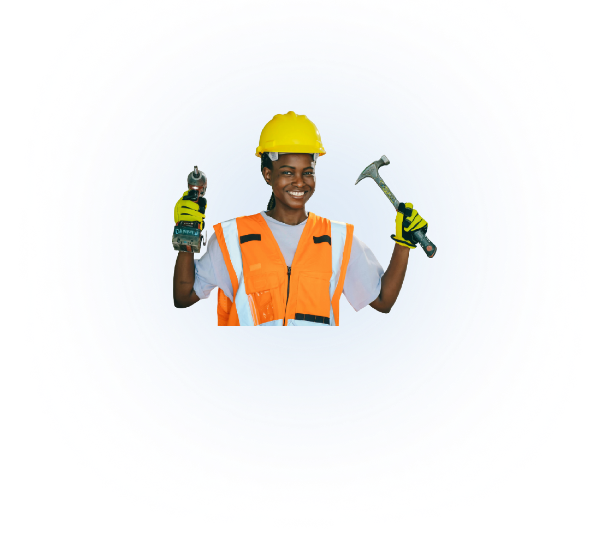
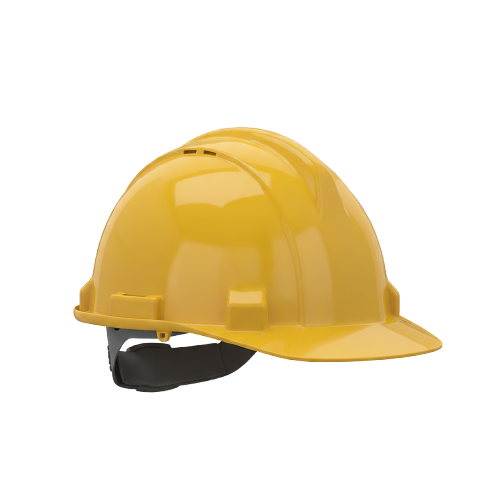
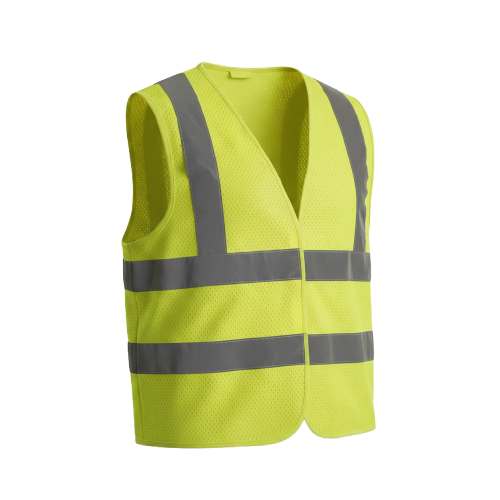

Pengetahuan APD
Pelajari pentingnya Alat Pelindung Diri dalam menjaga keselamatan pekerja di area konstruksi dan industri.

Alat Pelindung Diri (APD) adalah perlengkapan yang wajib digunakan oleh pekerja untuk melindungi diri dari potensi bahaya di lingkungan kerja. APD berfungsi untuk meminimalkan risiko cedera, kecelakaan kerja, serta dampak buruk terhadap kesehatan akibat aktivitas kerja, khususnya di area konstruksi dan industri.
Lingkungan kerja seperti proyek konstruksi memiliki risiko tinggi, antara lain kejatuhan benda, benturan, dan paparan bahaya fisik lainnya. Penggunaan APD secara konsisten dapat:

Safety Helmet
Safety helmet berfungsi untuk melindungi kepala dari benturan, kejatuhan benda keras, serta risiko cedera serius di area kerja konstruksi.

Safety Vest
Safety vest meningkatkan visibilitas pekerja, terutama di area kerja dengan kendaraan atau alat berat aktif yang berpotensi berbahaya.
Standar K3 Indonesia
Penggunaan APD merupakan bagian dari penerapan Keselamatan dan Kesehatan Kerja (K3) yang diatur dalam peraturan keselamatan kerja di Indonesia. Setiap pekerja diwajibkan menggunakan APD sesuai standar demi menciptakan lingkungan kerja yang aman dan tertib.
Peran Teknologi AI
Pengawasan APD secara manual memiliki keterbatasan pada area kerja yang luas. Dengan memanfaatkan model YOLOv8, sistem mampu mendeteksi penggunaan safety helmet dan safety vest secara otomatis untuk meningkatkan efektivitas pengawasan K3.